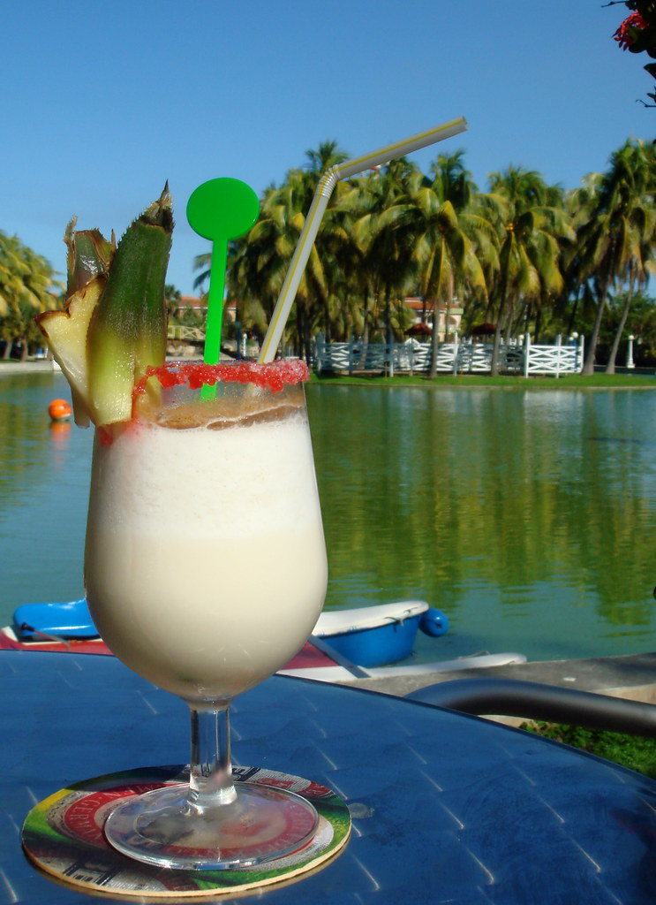
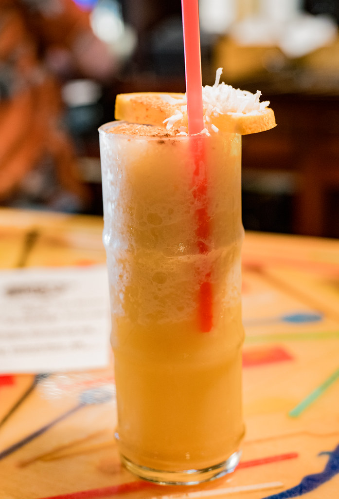
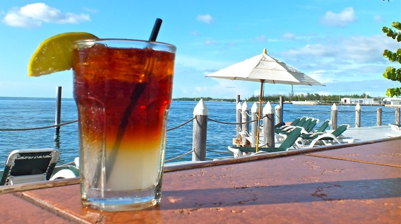
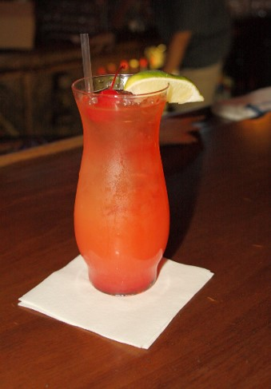
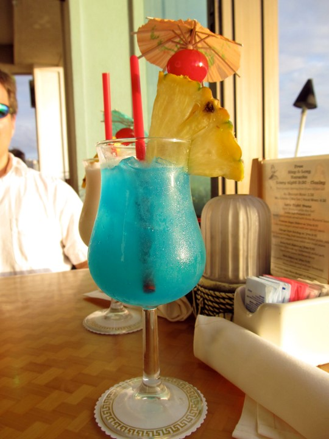
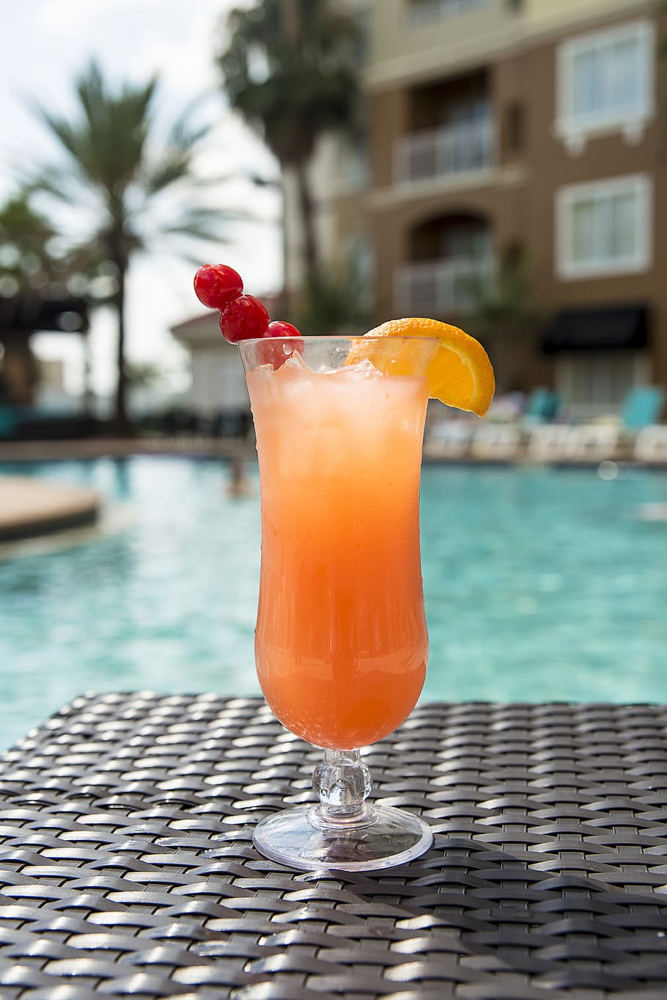
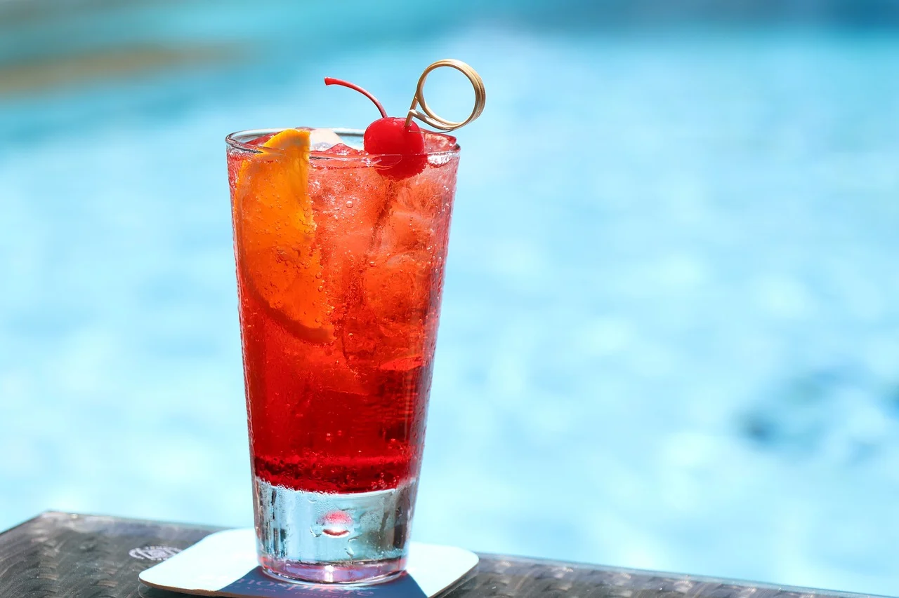
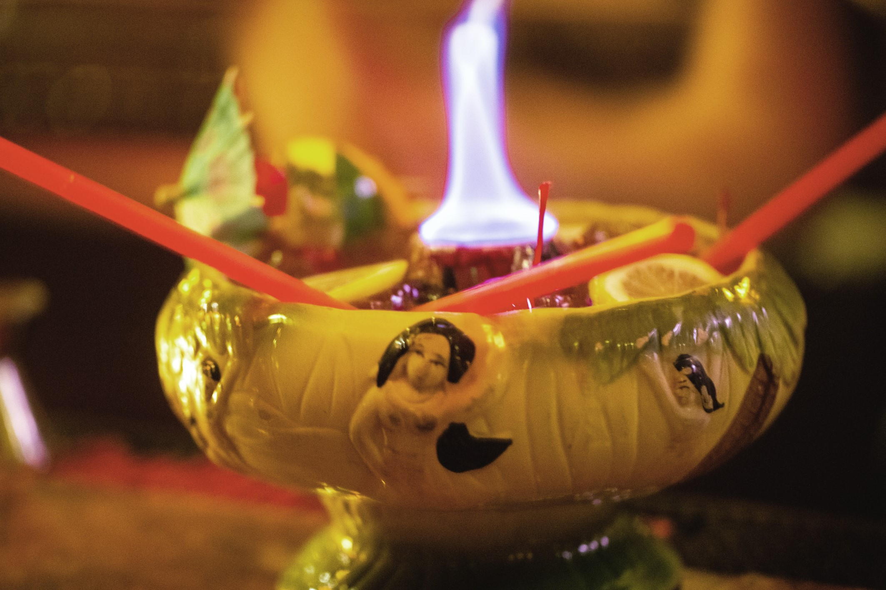

Tiki is best identified by its signature drinks. Inspired by the tropics, rum, fresh juice, and a layering of spirits and spices define this genre.
Mai Tais are among the drinks most commonly associated with tiki. All you need is light rum, dark rum, orgeat syrup, orange curaçao, simple syrup, and lime juice.
Pina Coladas are likely to most recognized of tropical drinks. Mix one up using white rum, coconut cream, and pineapple juice.
No pain here. Painkillers are a blended mix of dark rum, pineapple juice, orange juice, cream of coconut, and nutmeg garnish.
Dark rum, ginger beer, and a lime are all you need for a Dark'n Stormy.
Ride out the Hurricane with a mixture of light rum, dark rum, lime juice, orange juice, passion fruit, simple syrup, grenadine, and fruit garnish.
Blue Hawaiians incorporate light rum, vodka, blue curaçao, pineapple juice, and cream of coconut, and cherry to top it all off.
Pack quite a punch with Jamaican rum, fresh lime juice, and sugar cane juice in the Planter's Punch.
Gin, cherry liqueur, Cointreau, Benedictine, grenadine, pineapple juice, lime juice, and Angostura bitters create the iconic Singapore Sling.
A communal treat, Scorpion Bowls are commonly made with light rum, brandy, orange juice, lemon juice, and orgeat syrup for the whole table to enjoy.